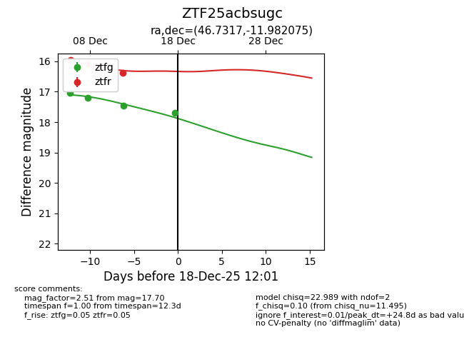
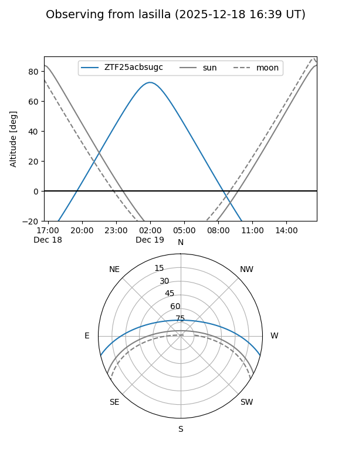
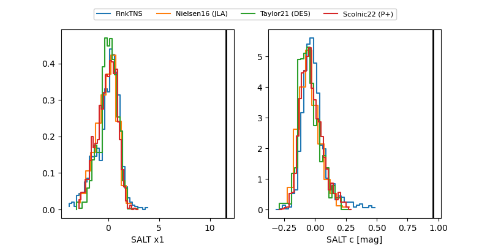

ZTF25acbsugc
Target ZTF25acbsugc at 2025-12-18 12:02
Aliases and brokers:
FINK: fink-portal.org/ZTF25acbsugc
Lasair: lasair-ztf.lsst.ac.uk/objects/ZTF25acbsugc
ALeRCE: alerce.online/object/ZTF25acbsugc
alt names
ZTF25acbsugc (ztf,fink_ztf)
Coordinates:
equatorial (ra, dec) = 46.7317,-11.98208
equatorial (HMS+DMS) = 03:06:55.62,-11:58:55.47
galactic (l, b) = (194.1339,-54.83595)
Photometry
last ztfg=17.70, ztfr=16.37
4 ztfg, 3 ztfr detections
Lightcurve

Visibility


Additional plots
